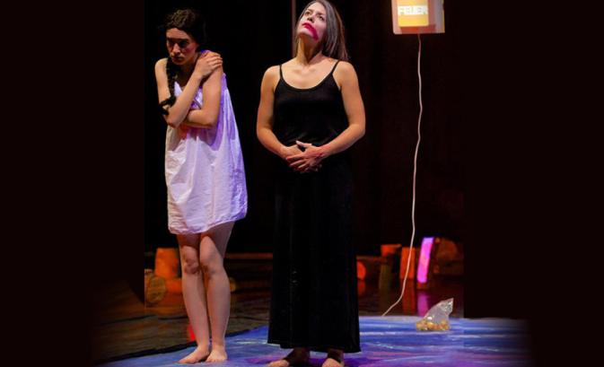
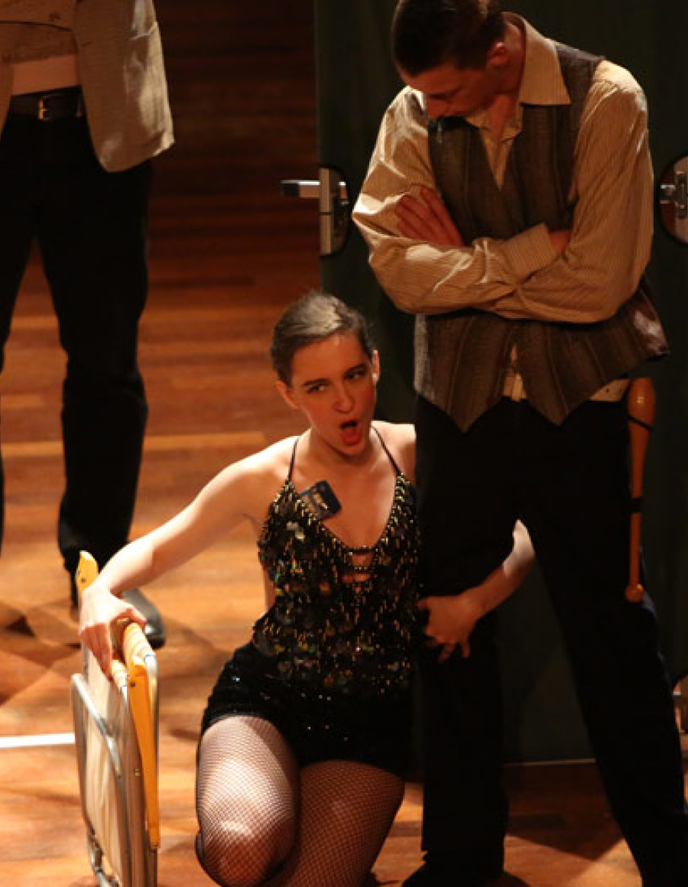
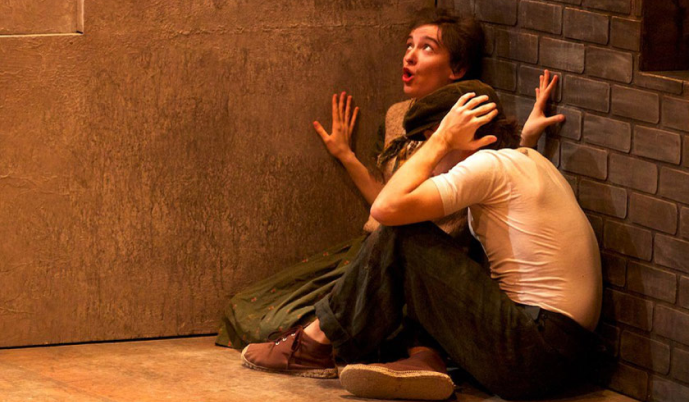
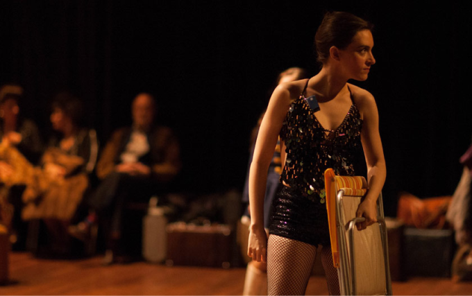
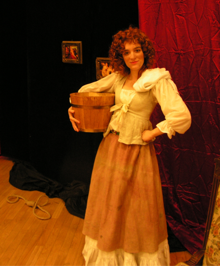
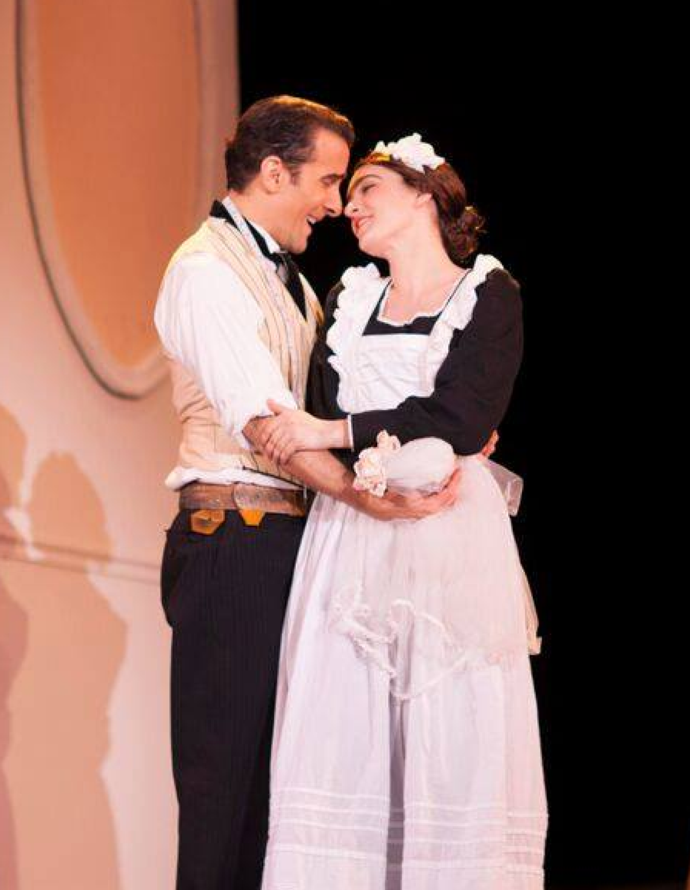
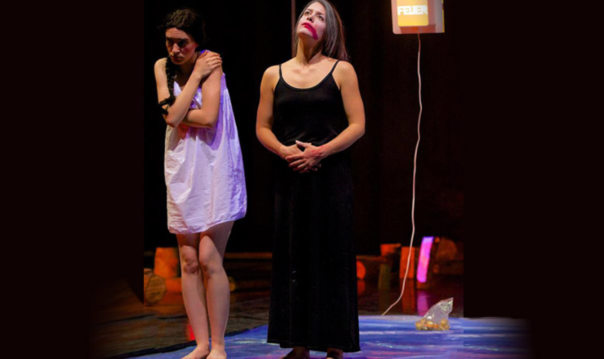
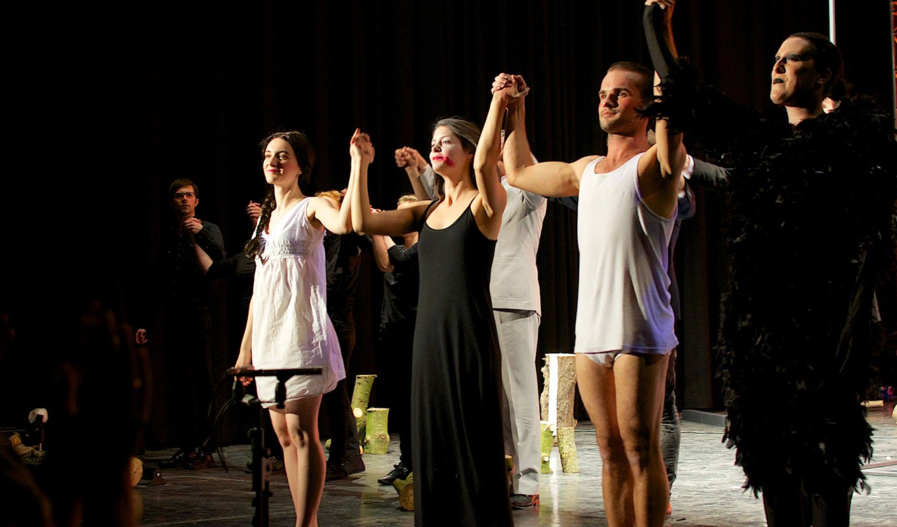

La Gran Esperanza – Opera Comique Maastricht

La Gran Esperanza – Opera Comique Maastricht

La Gran Esperanza – Opera Comique Maastricht

La Gran Esperanza - Opera Maastricht

Hänsel und Gretel,
photo by Constant Notten

Baba Jaga, photo by Constant Notten

Baba Jaga, photo by Constant Notten
Carmen – Opera Zuid, photo by Arjen
Bijtelaar

I pagliacci – Opera Zuid, photo by Martin Jan Gaasbeek

Bastien und Bastienne

Le nozze di Figaro, Opera Theater
of Pittsburgh

Baba Jaga, photo by Constant Notten

Baba Jaga, photo by Constant Notten